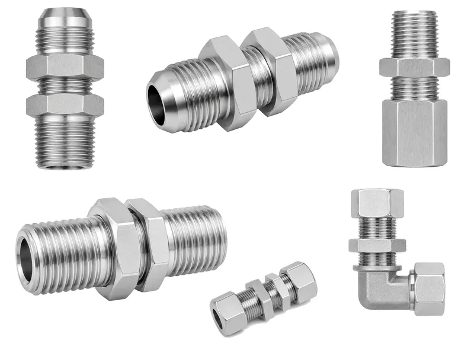
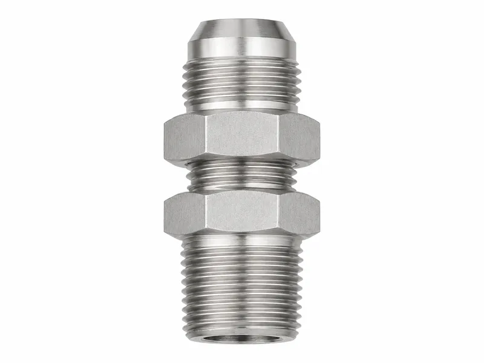
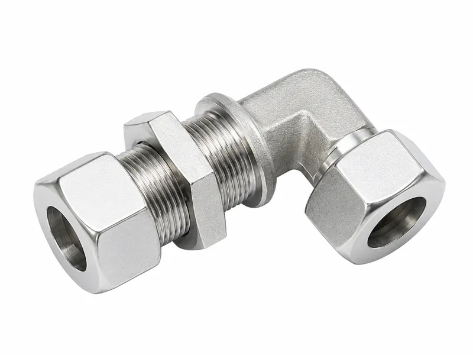
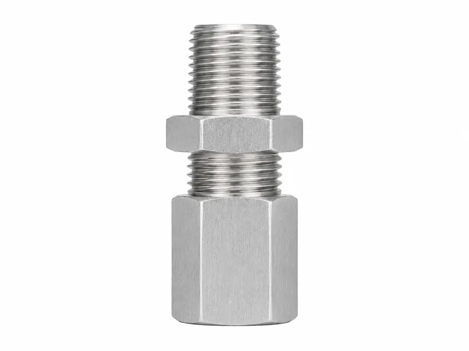
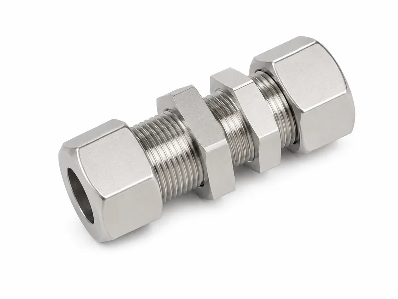

液压接头





| 产品类型 | 隔板接头 |
|---|---|
| 标准 / 螺纹类型 | 面板安装式液压连接结构，可按要求配置 JIC、BSP、NPT、ORFS 或公制端部螺纹 |
| 材质 | 碳钢、不锈钢或黄铜 |
| 表面处理 | 三价铬镀锌、锌镍、发黑、磷化或不锈钢本色 |
| 密封方式 | 两端密封方式取决于所选螺纹或接头标准；面板固定依靠锁紧螺母和台阶夹紧 |
| 定制选项 | 单端或双端隔板结构、锁紧螺母形式、加长螺纹、JIC/BSP/NPT/ORFS/公制端部组合 |
| 应用场景 | 机架、油箱、面板、支架、控制柜和移动设备中的穿板连接 |
| 压力要求 | 应同时确认液压系统压力、面板厚度和安装受力要求。 |
| 接头类型 | 密封方式 | 抗泄漏能力 | 典型用途 |
|---|---|---|---|
| 隔板接头 | 端部密封取决于所选接头形式，面板处由锁紧螺母固定 | 端部密封和面板夹紧均正确时效果稳定 | 液压管路穿过机架、面板和油箱 |
| 直通过渡接头 | 密封取决于螺纹、扩口或端面结构 | 适合普通直线连接 | 不需要面板固定的两端连接 |
| 弯头接头 | 密封取决于端部标准 | 适合改变管路方向 | 紧凑空间内软管或硬管转向 |
| 软管接头 | 软管尾芯扣压并配合端部密封 | 取决于扣压参数和端部接口 | 柔性液压软管总成 |
用于穿过面板、支架或设备机架，形成固定的液压连接点。
通过锁紧螺母和台阶夹紧，减少接头在面板处松动或位移。
使液压管路能够穿过机架、油箱或控制柜，同时保持线路支撑。
可组合 JIC、BSP、NPT、ORFS 或公制端部，适配不同系统布局。
可为较厚面板或特殊安装支架提供加长螺纹段。
在液压管路穿过机械框架时提供固定的穿板连接点。
用于管路穿过控制面板，同时保持连接位置清晰、便于维护。
在结构允许时，可用于油箱壁、防护罩或柜体的管路穿越。
帮助装载机、农业机械和专用车辆整理软管路线。
适合需要固定安装位置、锁紧螺母保持力和定制端部组合的设备设计。
1. 确认螺纹尺寸。 订购前确认准确螺纹尺寸和配合件。
2. 确认密封方式。 确认密封是否使用锥面、扩口、O 形圈、垫圈、锥管螺纹、螺纹密封胶或软管扣压结构。
3. 选择接头类型。 根据管路布局选择直通、弯头、三通、旋转、隔板、软管接头或转换接头。
4. 选择材质。 根据压力、腐蚀环境和介质要求选择碳钢、不锈钢或黄铜。
5. 确认表面处理。 根据使用环境选择三价铬镀锌、锌镍、发黑、磷化或不锈钢本色。
6. 发送图纸或样品用于定制生产。 非标尺寸需要提供图纸、样品或装配要求。
隔板接头由液压连接端、安装台阶和锁紧螺母组成。选型时应确认面板厚度、开孔尺寸和扳手空间，确保接头能够可靠夹紧。
两端密封方式取决于所选螺纹体系，例如 JIC 扩口、BSP 60°锥面或垫圈、NPT 锥管螺纹以及 ORFS O 形圈端面密封。
碳钢常用于通用液压机械，不锈钢适合耐腐蚀环境，黄铜可用于部分较低压力或特殊介质场景。
表面处理可选择三价铬镀锌、锌镍、发黑、磷化和不锈钢本色，应结合腐蚀环境、装配条件和客户规范确认。
请提供产品类型、螺纹尺寸、密封方式、材质、表面处理、数量、压力要求、应用环境，以及定制尺寸所需图纸或样品。
威兴机械支持按图纸、样品、螺纹组合、端口要求和表面处理规范进行 CNC 液压接头定制加工。
加工前检查棒料、锻件、材质牌号、批次信息和订单要求。
通过 CNC 加工螺纹、六角、本体轮廓、软管尾芯或对应产品的密封面。
使用量规或配合件检查螺纹牙型、螺距和装配配合情况。
检查锥面、扩口面、端面、锥管螺纹、软管尾芯等密封或夹持部位。
按要求进行三价铬镀锌、锌镍、发黑、磷化或不锈钢本色处理。
包装前复核关键尺寸、总长、六角尺寸、螺纹长度和连接细节。
使用防护帽、袋装、纸箱或出口包装，降低运输和仓储损伤。
这是什么产品？
隔板接头是用于连接液压油口、软管、硬管或面板结构的精密加工液压连接件。
它如何密封？
两端密封方式取决于所选螺纹或接头标准；面板固定依靠锁紧螺母和台阶夹紧
采用哪些标准？
面板安装式液压连接结构，可按要求配置 JIC、BSP、NPT、ORFS 或公制端部螺纹
可以使用哪些材质？
常用材质包括碳钢、不锈钢和黄铜，可根据压力、腐蚀环境和介质要求选择。
有哪些表面处理？
可提供三价铬镀锌、锌镍、发黑、磷化或不锈钢本色等表面处理。
能否按图定制？
可以，可根据图纸、样品、螺纹组合、本体长度、六角尺寸、材质和表面处理要求加工。
适用于哪些行业？
机架、油箱、面板、支架、控制柜和移动设备中的穿板连接
如何询价？
请提供螺纹尺寸、接头类型、材质、表面处理、数量、压力要求，以及图纸或样品。